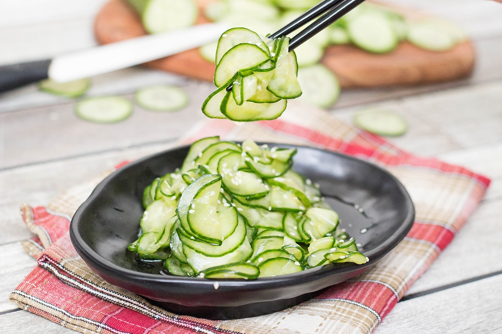

Cucumber Salad
Back

Description
Cucumber salad is a light and refreshing side dish or snack for hot summer days.
Only 5 to 10 minutes of prep work is required, and the results are super satisfying!
Ingredients
- One large English cucumber, or 2-3 regular cucumbers (peeled)
- 1/2 tsp salt
- 1 Tbsp sugar
- 2 Tbsp rice vinegar
- 1 tsp soy sauce
- 1 tsp sesame seeds (optional)
- Slice cucumber thinly.
- Place sliced cucumber in a bowl. Sprinkle with salt and toss to coat.
- In a small bowl, mix sugar, rice vinegar, soy sauce, and sesame seeds, if using.
- Pour vinegar/soy sauce dressing over cucumbers. Toss to coat.
- Refrigerate until ready to eat.